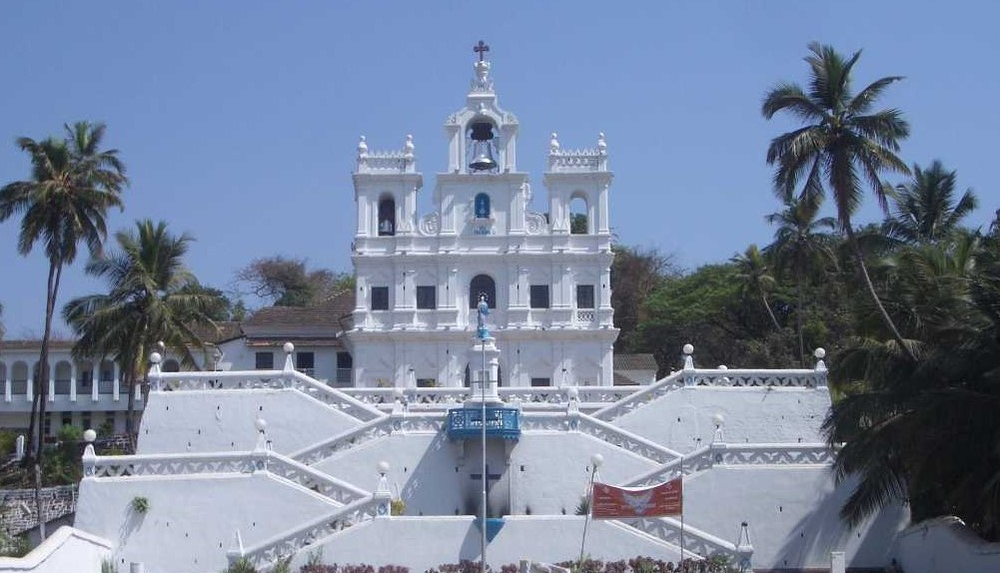

Places to visit in Goa
1. Armbol Beach

Located : North Goa
Beautiful and serene, Arambol Beach is among the best beaches of North Goa and is relatively unexploited by tourist activities. Considered to be one of the most spectacular beaches in Goa, Arambol beach has a distinct Bohemian feel to it, which attracts tourists from all over the world
2. Basilica of Bom Jesus Church

Located : Panaji
The Basilica of Bom Jesus Church is a UNESCO World Heritage Site. It houses the tomb and remains of St. Francis Xavier. Even after 400 years, the remains are in a good condition and are taken out once every decade.
3. Calangute Beach

Located : North Goa
Calangute is the largest beach in north Goa stretching from Candolim to Baga. It is a hub for tourists and backpackers as it is the perfect place to look for accommodation. It is known for the beach shacks and water sports like parasailing, water surfing, banana ride and jet-skiing.
4. Lady of Immaculate Conception
Located : Goa
Located in Panjim, Our Lady of Immaculate Conception is one of the oldest chapels in Goa. It is known to house the second largest church bells in Goa. The view of the sunset and the church lit up at night is a soothing sight to witness.
5. Cruise in Goa

Located : Panjim
Cruise in Goa allows one to explore the exotic scenery, pristine waters and marvel the breathtaking view of the sunset. There are several types of cruises in Goa ranging from simple evening cruises, elaborate and romantic dinner cruises, backwater cruises, and casino cruises. All of these usually originate from Miramar Beach in Panjim.
6. Dudhsagar Falls
Located : South Goa
One of India's tallest waterfalls, the Dudhsagar Falls is located inside the Mollem National Park. The Dudhsagar falls should be visited during the monsoon when it is in full flow and the surrounding deciduous forests are at their verdant best.
7. Dona Paula

Located : Panaji
Dona Paula is one of the most popular tourist hangouts in Goa famous for its vast stretch of beach. The small beach is also popular as the Lover's Paradise and features a jetty (Dona Paula Jetty) adjacent to it, which provides an ethereal view of the Arabian Sea and Mormugao harbour.
8. Fort Aguada

Located : South Goa
Fort Aguada is a 17th-century Portuguese fort looking out at the confluence of Mandovi River and the Arabian Sea. The crumbling ramparts of the fort stand on the Sinquerim Beach. The highlight of the fort is a lone four-storey lighthouse (which is one-of-its-kind in Asia) and a stunning view of the sunset.
9. Sri Mahadeva Temple

Located : Goa
Sri Mahadeva Temple, Tambdi Surla is one of the oldest temples in Goa to Lord Shiva. The inner sanctum of temple has a Shiva Linga mounted on a raised pedestal. There is also a statue of headless Nandi. The locals believe that there is a huge king cobra permanently sitting near the Shiva Linga.
10. Scuba Diving in Goa

Located : North Goa
Goa is one of the few places in India offering scuba diving. Diving in Goa is not the best owing to limited underwater visibility, but it is still popular among tourists as it is a good destination for beginners to explore the delights of the underwater world. The absence of strong water current with occasional surges adds serenity to the activity.
11. Thalassa
Located : Goa
Thalassa- The Greek Taverna is one of the most popular restaurants in Goa. Having moved out to the backwaters along with Siolim (from its prior location of Vagator hilltop), it is famous for its signature cocktails and sunsets. Reverberating with the cultural flavour of Greece, it serves authentic Greek Mediterranean cuisine.
12.Water Sports in Goa

Located : Goa
Goa is a haven for water sports like kneeboarding, kite surfing, snorkelling, parasailing, paragliding, diving, and kayaking. The water sports in Goa can be enjoyed at any one of the beaches in the north or the south. You can also engage in your favorite activities through a number of licensed water sports package operators.